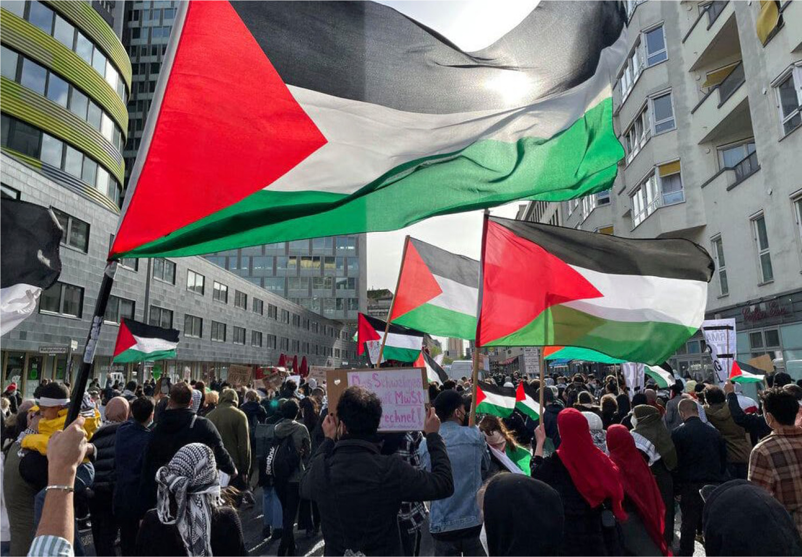

Navigating the Complexities
Understanding the Palestine-Israel Conflict
The Palestine-Israel conflict is a longstanding and deeply
rooted issue that has captivated the world's attention for
decades. The conflict, characterized by political, historical,
and religious dimensions, has led to numerous wars and ongoing
tensions. This blog aims to provide a comprehensive overview of
the Palestine-Israel conflict, shedding light on its historical
background, key events, and the complex dynamics that continue
to shape the region.
Palestine: A Tapestry of History, Resilience, and Hope
Introduction:
Nestled in the heart of the Middle East, Palestine is a land
whose history is as rich and diverse as its landscapes. From the
ancient cities of Jerusalem and Bethlehem to the vibrant culture
of its people, Palestine has a story that transcends political
borders and speaks to the resilience of its inhabitants. In this
blog, we will explore the multifaceted tapestry of Palestine,
touching on its history, culture, challenges, and the enduring
spirit of hope that prevails against all odds.

Historical Tapestry:
Palestine's history is a tapestry woven with threads of ancient
civilizations, diverse cultures, and religious significance. It
has been a crossroads of civilizations, witnessing the rise and
fall of empires, from the Canaanites and Philistines to the
Romans and Ottomans. The region's importance is underscored by
its role in the three major Abrahamic religions, with Jerusalem
serving as a holy city for Judaism, Christianity, and Islam.
The Nakba and Displacement:
The mid-20th century marked a tumultuous period for Palestine,
known as the Nakba, or "catastrophe." The establishment of the
State of Israel in 1948 led to the displacement of hundreds of
thousands of Palestinians, creating a refugee crisis that
persists to this day. The memories of the Nakba are deeply
ingrained in the Palestinian collective consciousness, fueling a
desire for justice and the right of return.
Cultural Heritage:
Despite the challenges, Palestine boasts a vibrant cultural
heritage that has endured through the ages. From traditional
Palestinian embroidery (tatreez) to the mesmerizing sounds of
oud music, the cultural expressions of the Palestinian people
reflect a deep connection to the land and a determination to
preserve their identity. Palestinian cuisine, with its flavorful
dishes like falafel and maqluba, adds another layer to the
cultural tapestry.
The Struggle for Self-Determination:
The quest for self-determination and statehood has been a
central theme in Palestine's modern history. Efforts to
establish an independent Palestinian state alongside Israel have
faced obstacles, and the status of Jerusalem remains a
contentious issue. International support for the recognition of
a Palestinian state underscores the global resonance of the
Palestinian cause.
Conclusion:
In examining the tapestry of Palestine, one encounters a story
of resilience, cultural richness, and a people who, despite the
challenges, hold onto a vision of a better future. As the world
engages with the complexities of the region, it is essential to
appreciate the multifaceted nature of Palestine, embracing the
diversity of its history, culture, and the enduring hope that
sustains its people in their quest for a brighter tomorrow.